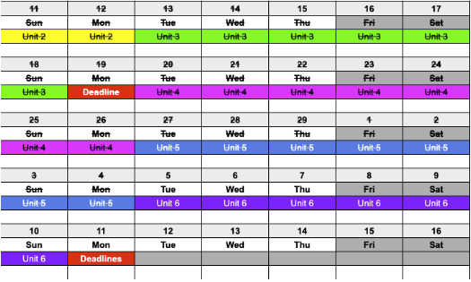
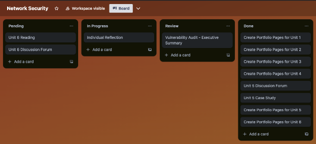
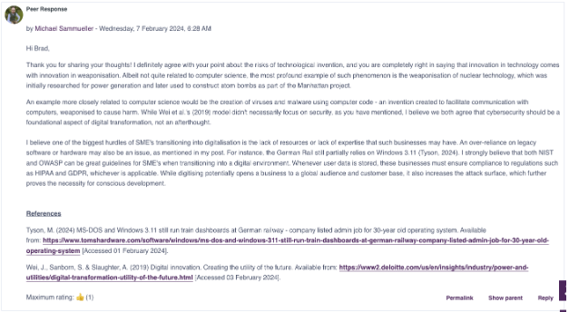
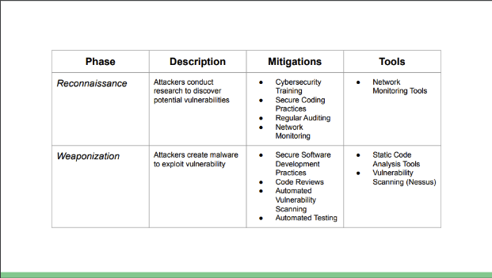

Unit 6: Final Reflection
Word Count: 868
Introduction
The Network Security Module was challenging and interesting. Being a six week module, we were taught a lot of information in a relatively short amount of time. Having had very little networking knowledge myself, I was eager to start this module ever since I applied to the university. Looking back at the last five weeks, I can confidently say that this module was one of the most enjoyable and informative modules of my course so far.
Study Approach
Based on prior experience, a six week module requires a different study approach compared to a twelve week module. A six week module has a steep learning curve, and not much time between deadlines, whilst a longer module allows students to slowly get comfortable with new concepts before thinking about their assignments.
I have learnt that I work well under pressure - Handling both university and work simultaneously is difficult yet fulfilling. I found myself wanting to perform my tasks in as much detail as I possibly could. Over the past few modules, I have come up with some form of planner, which allows me to keep track of which unit I am currently studying, and which (and when) deadlines are coming up.
Although it doesn’t look pretty, it’s effective. Combined with my Trello task planner it provides a clear understanding and overview over what I have to do, what I am doing, and what I have already completed.
The e-portfolio serves a similar purpose for me, as it allows me to reflect on my tasks after each activity, and allows me to look back at what I have already achieved. This motivates me to keep going, and it makes me proud to see how far I have come.
Formative Work
As mentioned, I like to keep my e-portfolio up to date even if it is not graded, as it is an effective learning and reflecting tool. One aspect I appreciate about every module so far are the discussion forums. Participating in them does not just provide the opportunity to form an opinion, but it also allows us to share our thoughts with our peers. Doing so either strengthens your opinion or causes you to form a new one, but you will always benefit from sharing knowledge with others. The module wikis works similarly, but is less interactive.
Reflecting on literature, case studies, and sample reports was extremely helpful in preparing me for my assignments. Particularly, the “Sample Vulnerability Assessment Report” by PurpleSec (N.D.) formed the inspiration of my own report. Reflecting on this piece of work allowed me to extract the aspects I think worked well, and add aspects which I believed to be missing. For instance, grouping vulnerabilities together whenever they were of the same rating, or had similar mitigations, resulted in a more concise report.
Furthermore, creating presentations, such as the presentation about the Solar Winds Exploit, helped me to further my skill in presenting a lot of information with little text, which is something that is especially useful when creating reports with limited word count.
Final Assignment
The final assignment was my favorite aspect of this module. As I have mentioned in some of my individual unit reflections, I am a Kali Linux enthusiast and have used it many times before to understand WiFi security, albeit privately. I have also signed up for tools like tryhackme.com, to further my pen-testing skills. Being able to finally use all the available tools on Kali Linux for an academic purpose was very fulfilling.
I was surprised by the amount of vulnerabilities I discovered. Creating the pie and donut charts to display my findings visually emphasized the severity of some of my findings. As mentioned previously, I followed the sample report by PurpleSec (N.D.) to shape the outline of my own report. After deciding on my headings, I began to summarize my findings, create charts, extract the risks, and propose mitigations. I specifically emphasized any standard breaches, as I find this to be vital information.
I was not afraid to change my mind and plan. If a tool did not work as I expected, I changed it. If I found that my initial analysis was incorrect, I mentioned it in my report. For instance, I initially assumed that, being an ecommerce business, AbanteCart would provide credit and debit card payment options, something they are actually advertising on their website. After some manual testing, I discovered that they only offer cash on delivery, hence the PCI DSS standard would no longer apply to them.
Conclusion
Overall, I believe my way of structuring and organizing my studies works well for me. Planning ahead and having a clear overview of my tasks helps me not only to perform well, but also to not overthink, which is something I used to struggle with a lot. My renewed interest in network security has already affected my professional life in a positive way. I have just recently completed development of a Python GUI application which allows me to start and stop software on any machine on our network remotely, using PsExec (Russinovich, 2023). I am looking forward to learning more about this particular topic in the future.
References
PurpleSec (N.D.) Sample Vulnerability Assessment Report - Example Institute. Available from: https://purplesec.us/wp-content/uploads/2019/12/Sample-Vulnerability-Assessment-Report-PurpleSec.pdf [Accessed 05 March 2024].
TryHackMe (N.D.) A fun way to learn cyber security. Available from: https://tryhackme.com [Accessed 05 March 2024].
Russinovich, M. (2023) PsExec v2.43. Available from: https://learn.microsoft.com/en-us/sysinternals/downloads/psexec [Accessed 05 March 2024].